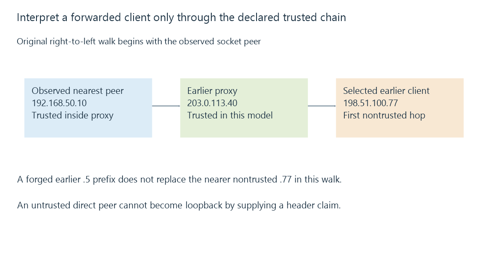

Forwarded client addresses and trusted proxy context
Forwarded client-address metadata describes an earlier request path only when interpreted through trusted proxy context, separately from the origin’s actual socket peer.
When a reverse proxy contacts Emby, the socket peer Emby sees is that proxy. The original viewer can be represented in forwarded metadata, but the origin needs a reason to trust the representation.
A header and a transport observation are different evidence.
Keep the socket peer as a separate value
Use this original chain, with documentation addresses standing for external nodes:
{
"socketPeer": "192.168.50.10",
"forwardedFor": ["198.51.100.77", "203.0.113.40"],
"trustedProxies": ["192.168.50.10", "203.0.113.40"],
"selectedClient": "198.51.100.77"
}
The origin’s direct peer is the inside proxy. The earlier edge proxy is another explicitly trusted node. The remaining address represents the client under this declared model.

The fields are an explanatory projection. They are not a native Forwarded or X-Forwarded-For parser result from a running server.
Walk only through established trust
For this exercise, begin at the observed peer. If it is not a trusted proxy, ignore its address-chain claims.
If it is trusted, walk the supplied chain from the nearest end toward the earlier client, continuing only through the nodes the policy trusts. Select the first nontrusted address reached.
NGINX documents a related recursive real-IP interpretation using trusted sources and the last nontrusted supplied address. Actual products have their own configuration and supported header formats.
Now prepend a forged 198.51.100.5 to the original chain. The model still stops at 198.51.100.77. Choosing the leftmost value unconditionally would instead accept the forged prefix.
This assumes the trusted proxies supply the expected chain semantics and protect the relevant hop context. Trusting an address label without a controlled path is insufficient.
Direct origin access is another input
Suppose a direct client at 198.51.100.77 contacts the origin and supplies a header claiming 127.0.0.1.
Under the model, that socket peer is not a trusted proxy, so the claim does not replace it. A header cannot make an external request originate from the origin’s loopback stack.
A real deployment’s direct-access and proxy trust policy determine how this boundary is enforced. RFC 7239 explains why forwarded fields cannot be assumed correct merely because they arrived.
Parse the declared header format before classifying addresses
Forwarded and X-Forwarded-For are different representations. RFC 7239 defines structured Forwarded parameters; an IP-list interpretation is not a complete parser for that format.
An original readable header example is:
Forwarded: for="[2001:db8:50::77]";proto=https;host=media.example.net, for=203.0.113.40
The first for value is a quoted, bracketed IPv6 address. The commas separate forwarded elements, while semicolons separate parameters within an element. The source values are documentation data.
The standard also allows unknown and obfuscated node identifiers. Those values can describe a forwarding step without yielding a concrete client IP for address classification. They must not silently become a loopback or private-address value.
Equivalent IPv6 spellings can identify the same address bits. A trust policy comparing unnormalized text can mistakenly distinguish them; syntax validation and canonical address interpretation precede the membership decision.
Neither successful parsing nor a valid IP range establishes provenance. The observed peer and trusted forwarding path still determine whether the interpreted value can influence the application’s decision.
Address and scheme metadata affect application decisions
The interpreted original address can affect logs, local/remote classification, limits or address filters. A forwarded scheme/host can affect generated external links and redirects.
Those uses need consistent provenance. Misclassifying an earlier outside client as the inside proxy can produce a different policy result from the intended one.
Emby exposes forwarded-header interpretation in its network settings. That documented role does not establish that every arbitrary chain or direct-origin path is trustworthy.
Preserve the chain when investigating a discrepancy
The socket peer, received header values, trusted-proxy set and selected interpretation explain the decision together.
Recording only the final displayed address loses the evidence needed to tell a legitimate translated client from an incorrectly accepted claim. Local and remote connections follows the classification built on that context.
See Also
- Reverse proxies and the two-sided server path
- Local and remote connections to Emby
- Firewalls, traffic rules and connection state